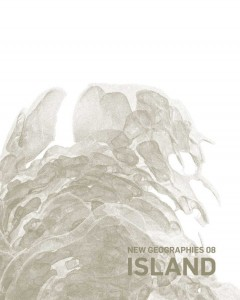

DESIGN EARTH
MAIN
PROJECT
PUBLISH
EXHIBIT
ANIMATION
The Planet After Geoengineering
Climate Inheritance
Elephant in the Room | JAE
The Anthropocene Chamber | Designing Landscape Architectural Education
Of Oil and Ice | Ambiguous Territory
Undermined Planet | Architectural Review
Uncommon Planet | LA+
A Flooded Thirsty World | JAE
Carbon Re-form | Log
Cosmorama | New Geographies
Geostories
Geostories | Domus
Trash Peaks | Architectural Design
DESIGN EARTH / Impermanence
The Great Waste State / Third Coast Atlas
Apart We Are Together / Thresholds
Leviathan in the Aquarium | JAE
Geography and Oil / Infrastructure Space
A Microcosm on a Sheet of Paper | New Geographies
Georama of Trash / ARQ
Territories of Oil / The Arab City
Neck of the Moon / Volume
Gaia Global Circus / The Avery Review
Geographies of Trash
8Mile Baseline / JAE
Airpocalypse | San Rocco
Hassi Messaoud Oil Urbanism | New Geographies
Geographies of Trash / JAE
A Geographic Stroll Around the Horizon | MONU
Where Are the Missing Spaces | Perspecta
New Geographies 4: Scales of the Earth
New Geographies 2: Landscapes of Energy
The Space of Controversies | New Geographies

Hassi Messaoud Oil Urbanism
New Geographies 06: Grounding Metabolism, 2014
Download